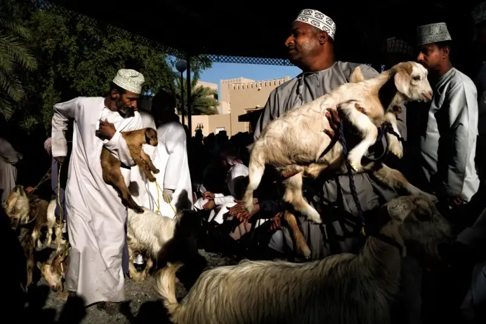
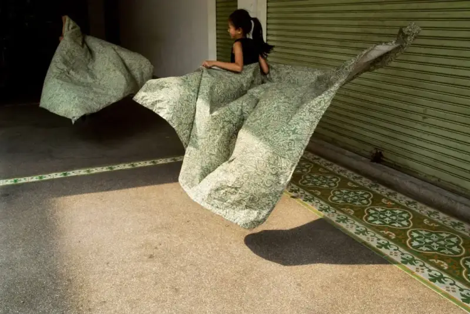
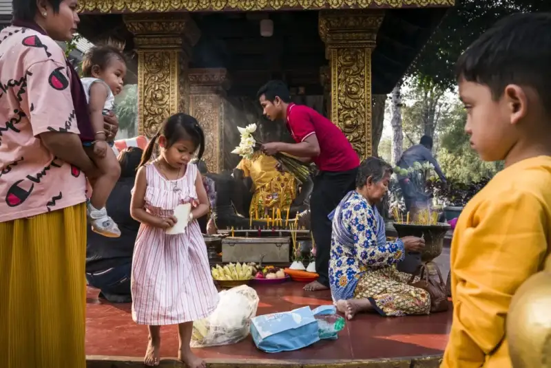
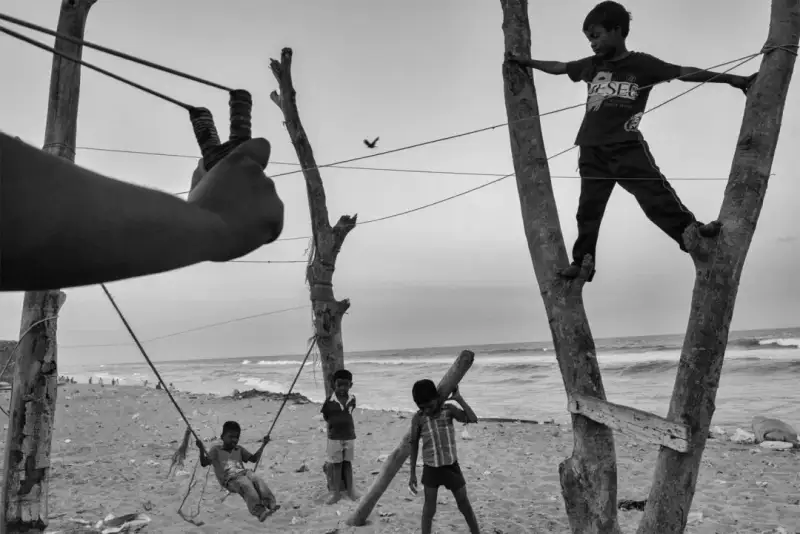
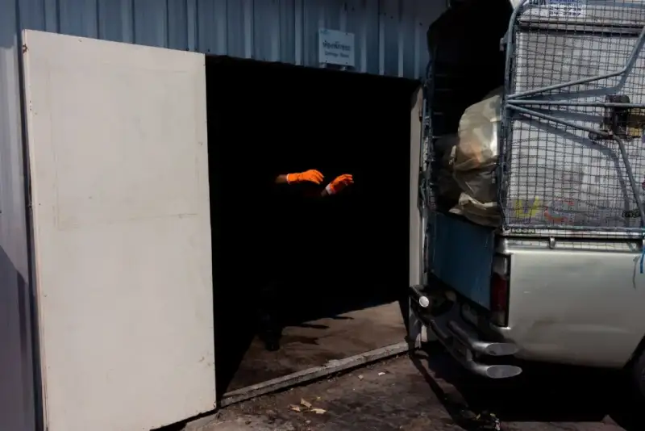
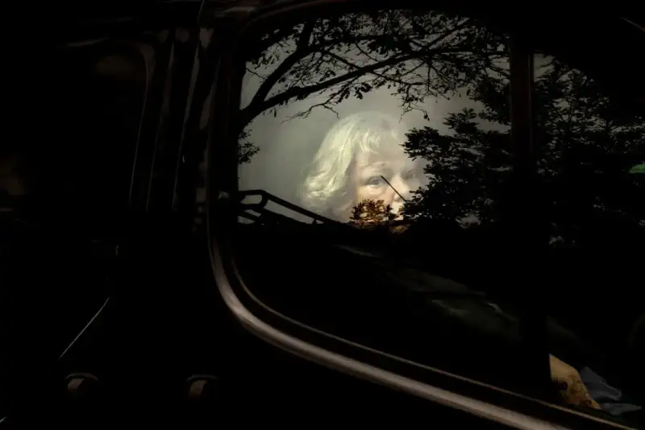
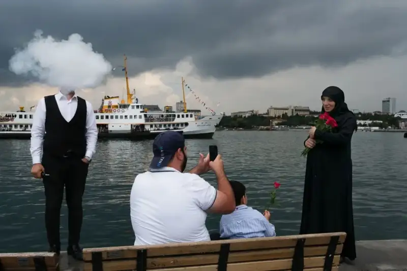
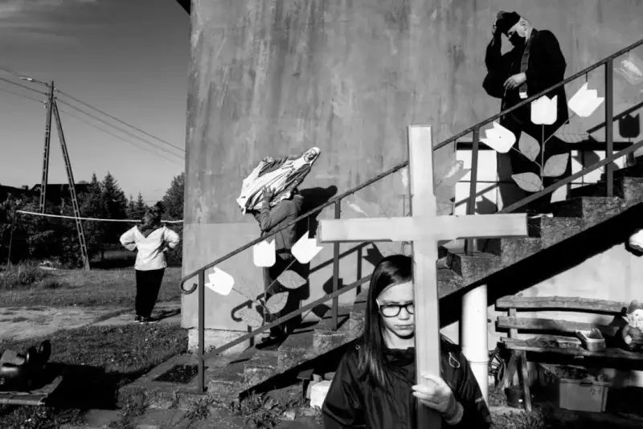

▲ Goat Auction in Nizwa, Oman ©Maude Bardet (France)
A beautiful instant with a complex structure. The photographer captured a lively scene, with every element just right. The flow of people and animals forms a dance. The dark background, plus the low upward angle, makes the figures stand out. The photographer managed to disappear, unnoticed by the participants.

▲ Magic Carpet, Bangkok, Thailand ©Tavepong Pratoomwong (Thailand)
A wonderful capture of everyday life: the young girl lifted by cloth, floating above the ground, like a cape, a magical airborne moment. I love the lightness, and the careless ease of childhood, which fill the photo with grace and energy. The refined green and yellow add a harmony to the whole. It is a tender and poetic piece.

▲ Buddhist Roadside Shrine, Siem Reap, Cambodia, 2020 ©Florian E. J. Lang (Germany)
One mark of a strong street photo is that every element is arranged so that, among the crowded people, objects, and background, everything has room to breathe. In this photo of a roadside Buddhist shrine in Cambodia, everything is just right, and the people truly exist in the frame. It is hard to find any flaw in the detail here, and I know how hard that is to achieve.
▲ The Red Jacket ©Manuel Armenis (Germany)
This photo looks like a Mondrian painting. The shadow, the lit wall, and the pop of red all draw the viewer. I like photos that use signs. The girl is well placed, with shadow on her back. In short, it is a very successful street photo.

▲ God Is Everywhere, Chennai, India ©Sasikumar Ramachandran (India)
What makes an image stand out is the blend of content and form: what it shows and how it shows it. What makes an image not just stand out but stay with the viewer is a visual event, something beyond the image, beyond its edges, hard to put into words. It is a very special link that comes from a unique place deep in each photographer. The two I chose are partly like that.

▲ Zombie Instinct, Thung Thong Thani, Bangkok, Thailand, 2017 ©Jatuporn Pateepaparnee (Thailand)
I really like this photo. It shows us the photographer's mind'eureka' moment. Whether the scene was foreseen or a quick reaction, it needs an instinctive use of light, framing, and timing. The glowing orange glove is very visible and draws the eye exactly. It turns a wholly ordinary scene into something special. It needs no title, and no larger series to prove it is an interesting image.

▲ Woman in the Woods, Brussels, Belgium, 2016 ©Camilla Ferrari (Italy)
Fine composition. The setting and light guide our eye to the subject's face and grab our attention at once. Like a spiral, it links our gaze with hers. Then we feel we are in a surreal world, as she asks us a question and tells her own story, all with a single look. Against the natural background and her white hair, she becomes the biggest question mark in the photo.

▲ Rose Story, Turkey ©Haluk Safi (Turkey)
We love photos that take us to places we have never been, and that surprise, enlighten, mystify, or amuse us. Sometimes the subject draws us, sometimes the photographer's vision, and often both. In the Turkish photographer Haluk Safi's photo, what draws us is not only the fantasy of a wisp of smoke on the man's face, nor only how the smoke answers the atmospheric sky behind. It is also that the smoker seems lost in the fog of his own thoughts, a world away from the warm family scene playing beside him.

▲ Saint Mary's Festival Day, Staniszewy, Poland ©Szymon Lewinski
All the elements here are balanced and harmonious. The photographer went beyond the image's reality, which is rare in contemporary documentary work. It could also be reportage, but deeper than the reportage we are used to, and more poetic at the same time.
▲ Philippines, 2018 ©Orna Naor
This is a perfect street photo. It makes you feel you are on the street, watching something moving happen. A mother holds her child in a way that shows she is protecting her with all she has. The composition is excellent, green and red complement each other, the woman's body is lit perfectly from top to bottom, and the shadow completes the story. She looks almost threatened, as if lost in a hostile setting. The focus on the present emotion lifts the image beyond a mere pretty picture and links it to the viewer.